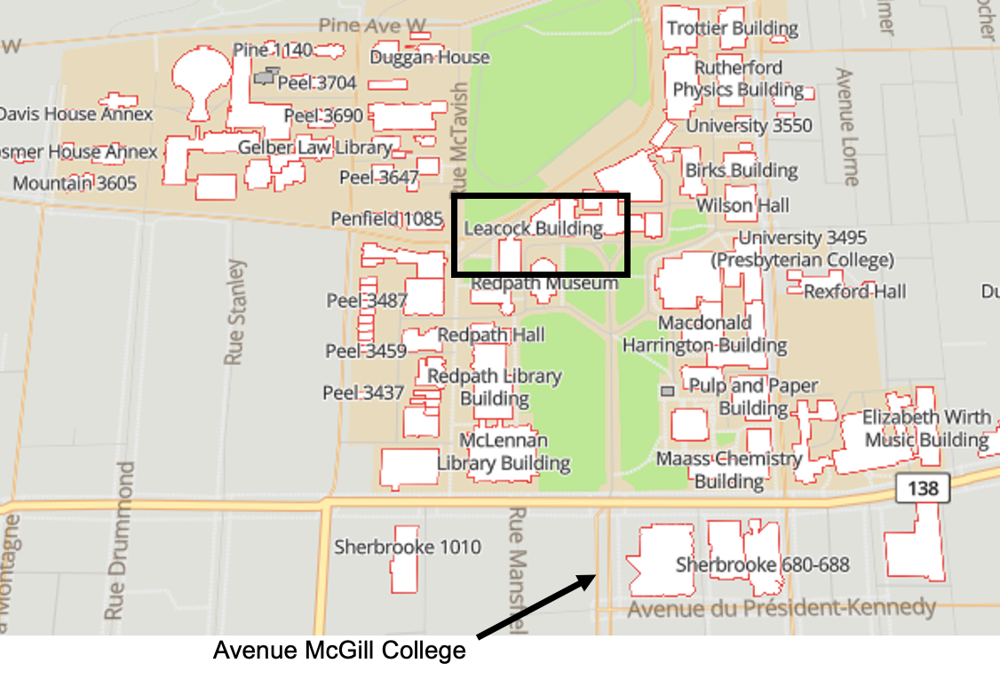
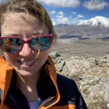
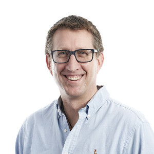
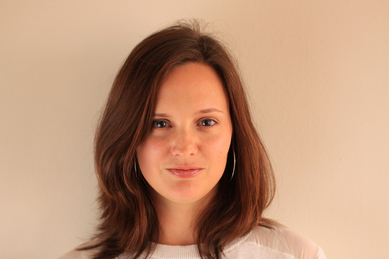
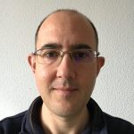
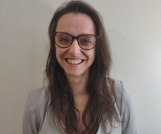
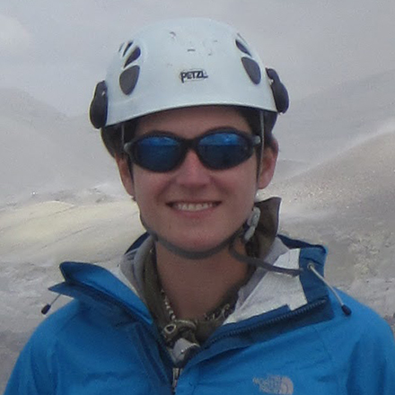
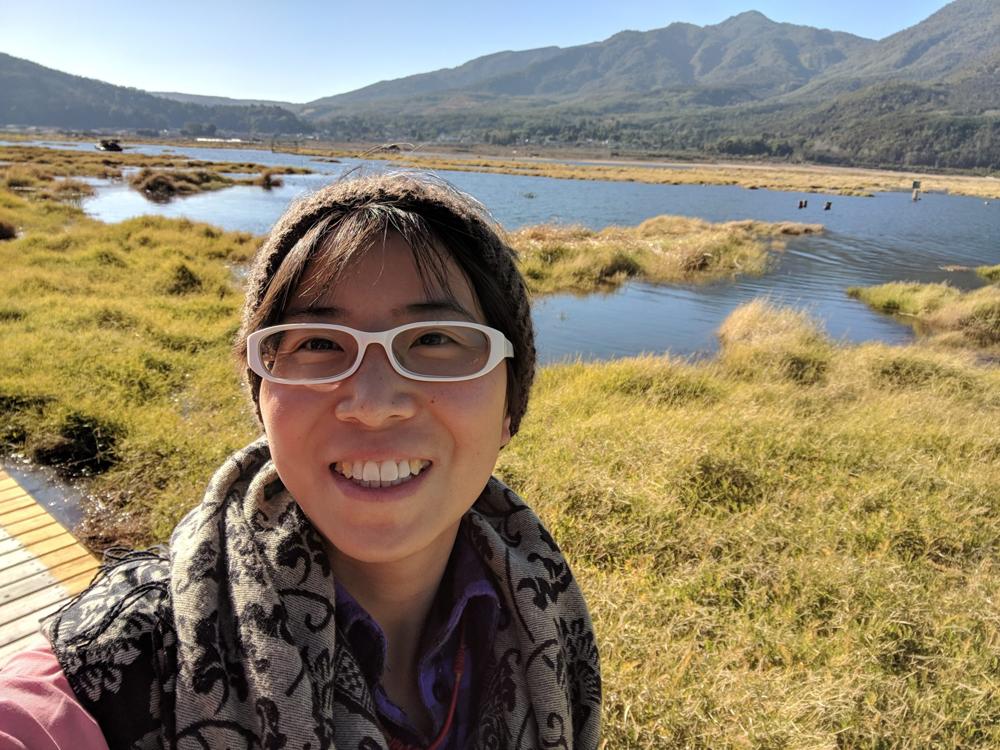
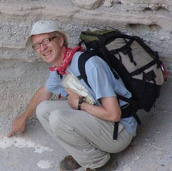
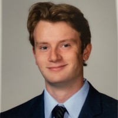

Sunday 12th July · Montréal, Québec, Canada
No cost, open to all, hybrid format
Goldschmidt registration NOT required
If you are attending Goldschmidt 2026 in Montréal (or even if you’re not…), consider signing up to our full‑day workshop dedicated to advancing the science and practice of volcanic gas measurements and modelling. It is free and running both in-person in Montréal and virtually! You do not need to register for the Goldschmidt conference to attend.
We have space for 50 in-person participants so first in, first served! If you’re not in Montréal or we’ve reached our in-person limit, you can join us online.
The workshop will begin with an overview of natural volcanic degassing processes and the current state of in situ and satellite‑based monitoring techniques. A series of structured presentations will provide insights into case studies from natural volcanic systems. Topics will include gas measurements during monitoring, experimental approaches (including melt and fluid inclusion analyses), sulfur partitioning, Raman‑based SO₂/CO₂ speciation, and current challenges in calibrating and applying numerical models.
Participants will also engage in guided group exercises run through VICTOR designed to reproduce benchmarking results, compare methodological approaches, and identify priorities for improving data quality and model performance. Outcomes from these activities will contribute to an updated Workshop White Paper, helping to shape collective standards and future directions.
All researchers, students, and professionals engaged in volcanic gas studies are encouraged to attend this collaborative event.
Sunday 12th July 2026
9:00 am – 4:30 pm EST
McGill University
Leacock Building, Montréal
View map
Hybrid
In-person & online
In-person attendees:
Virtual attendees:
We will be running some exercises (e.g., calculating pressures and vapor compositions, degassing calculations) during the workshop through the VICTOR computational platform. This does not require downloading any software onto your computer but it does require signing up to VICTOR.
Volatiles are a critical component of magmas, driving volcanic eruptions, creating and modifying planetary atmospheres, and generating ore deposits. Over the last few decades, there has been an immense amount of work quantifying the solubility of individual volatile species in a wide variety of magma compositions and the creation of various modelling capabilities to look at melt-vapor chemical equilibria of C-H-S-N-Cl-bearing magmas (e.g., pressure of vapour-saturation and degassing calculations). At IAVCEI2023, the first "Modelling volatile behaviour in magmas" workshop brought together experimentalists, numerical modellers, and observational researchers with an interest in volatile solubility in magmas to explore the current landscape and look for future directions. At Goldschmidt2026 we will host a follow-on workshop, supported by a Catalyst: Seeding grant from the Royal Society Te Apārangi (Aotearoa New Zealand).
There is wide variety of tools currently available to the community for modelling melt-vapor chemical equilibria, such as VESIcal, D-Compress, Sulfur_X, MAGEC, EVo, CHOSETTO, MELTS+DEW, and VolFe. This workshop will showcase some of these currently available tools with the opportunity to learn how to run calculations and compare calculation outputs. We will also present a benchmarking exercise, where different melt-vapor chemical equilibria tools have run the same degassing calculations, and explore the different behaviour of the tools (e.g., depth of sulfur degassing, changes in oxygen fugacity during ascent, melt and vapor composition, etc.). We will have discussions on future directions, outlining the progress on "what are the experimental and modelling gaps?", "what do observational researchers need these codes to do?", and "can we link monitoring needs to solubility outputs?" and discussing new topics to support future work to improve these tools.
Whether you're just getting started with modelling the behaviour of volatiles in magmas, or have used a variety of these tools in your own work, we are excited to see you at our workshop!
All times in US Eastern time (Montréal)
Check in and network with fellow attendees. Welcoming remarks and a brief review of our last workshop. Penny Wieser (UC Berkeley) and Shuo 'Echo' Ding (University of Florida). These invaluable keepers of the rock record. 30 min. Einat Lev & Sam Krasnoff (Lamont-Doherty Earth Observatory). Building a community resource for hosting, archiving, running, and intercomparing volcanic process model codes. We will be using VICTOR to run our modeling exercises. 20 min. 30 min. Discussion prompt: caffeine solubility and degassing in low-solute aqueous fluids. 20 min. Ery Hughes (University College London). Active volcanic degassing literally unearths the records of magmatic volatiles sourced throughout a vertically extensive magma plumbing system. 30 min. 30 min. Andri Stefansson (University of Iceland). Volcanic degassing: more than just a pretty plume. 30 min. Shashank Prabha-Mohan (Université Clermont Auvergne). Where do models come from, anyways? Tales from your local university basement. 30 min. Monika Rusiecka (University of Oxford). The addition of the lesser studied by critically important magmatic volatiles. 30 min. Discussion prompt: the most underrated volcano. 20 min. Kayla Iacovino (SETI Institute). We tested five H-O-C-S solubility and degassing codes (plus some H-O-C-only ones). What we found will shock you (please like and subscribe). Kayla will present what we have been working on since our last workshop three years ago: what we found, why it took us so long, and the new Python wrapper volcatenate. 35 min. Discussion prompt: "do you have oat milk?" Let's set some real acheivable goals and report back at our next workshop. 30 min.Schedule
Pre-workshop Tea and Coffee
Opening Remarks
Morning Session
9:40–12:20
Melt and fluid inclusions
Introduction to the VICTOR computational platform
Exercise 1: Calculating pressures and fluid compositions
Coffee Break
Volcanic gases
Exercise 2: Degassing
Lunch 12:20–13:20
Catered lunch on site. 60 min.
Afternoon Session
13:20–16:30
Hydrothermal systems
Experiments and model calibration
Chlorine and halogens in volcanic systems
Coffee Break
Model comparison
Quick Coffee Break
Wrap up and future steps
Adjourn 16:30
The workshop will end at 4:30 PM in time to attend the Goldschmidt Icebreaker at the Montréal Convention Centre at 5:00 PM. A discussion prompt for the icebreaker: champagne bottles as an experimental magma chamber analogue for the solubility of CO2 in aqueous solution. Bonus: the potential for calculating the Gibbs free energy of degassing from the velocity and trajectory of a cork during champagne fragmentation.
We hope this workshop will have inspired a lot of discussion and created exciting new collaborations. We will be sending out a questionaire to participants after Goldschmidt to gather feedback on the workshop and on what the participants took away from it. For those interested in working with the organizers on a post-conference white paper (similar to this one), please get in touch!
McGill University
Leacock Building
855 rue Sherbrooke Ouest
Montréal, QC H3A 2T7
Canada
Nearby transit stations:
Du Docteur-Penfield / Réservoir McTavish (Bus routes 50, 144, 360)
 Please email ery.hughes@ucl.ac.uk with questions related to the workshop Organizers
![ Organizers Please email ery.hughes@ucl.ac.uk with questions related to the workshop  Ery Hughes UCL Earth Sciences, UK  Geoff Kilgour Earth Sciences New Zealand, Aotearoa New Zealand  Séverine Moune Laboratoire Magmas et Volcans, France  Etienne Médard Laboratoire Magmas et Volcans, France  Penny Wieser UC Berkeley, USA  Kayla Iacovino SETI Institute, USA  Shuo “Echo” Ding University of Florida, USA  John Stix McGill University, Canada  Tom Richards McGill University, Canada](public/Leacock_Building_Map.png){kind=link}